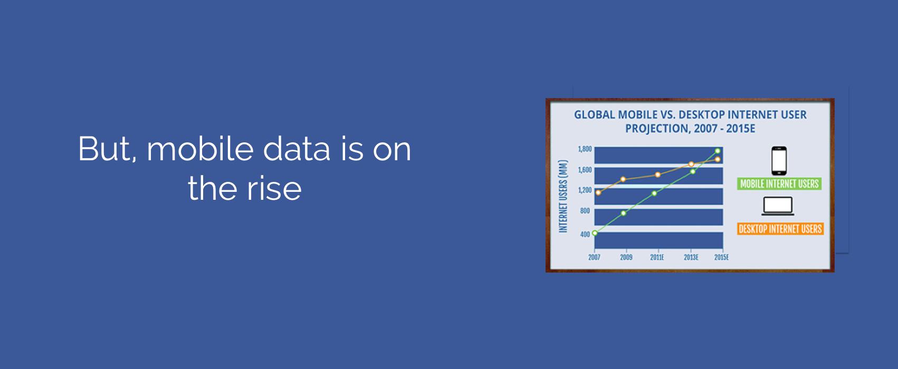
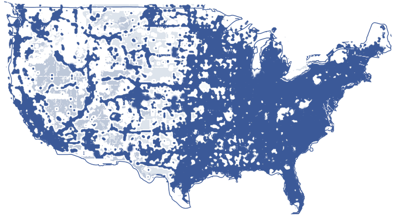
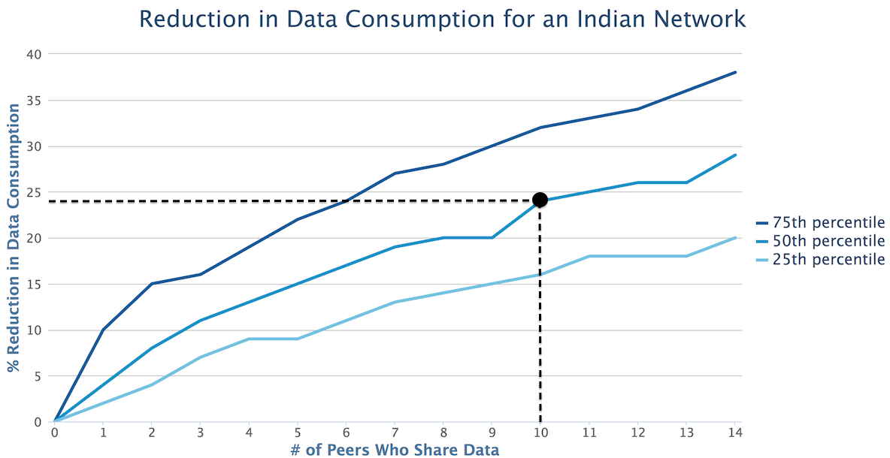

-

- 
-

Network Coverage
2G


64 kbps
20 sec
per news feed download3G

20,000 kbps
0.6 sec
per news feed download4G


100,000 kbps

0.012 sec
per news feed downloadNews Feed Overlap in Emerging Markets
From a study our team conducted of a high school network in India, if an Indian user were to connect with 10 randomly selected peers within the population, they could expect to reduce their news feed data consumption by 25%. These results confirm that this potential reduction in data consumption would make a tangible difference to Facebook Android users.
